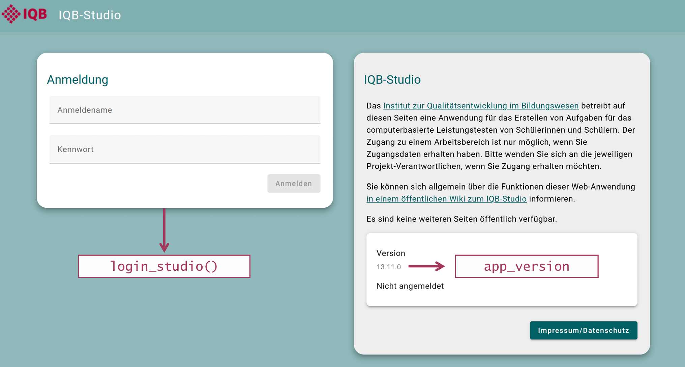
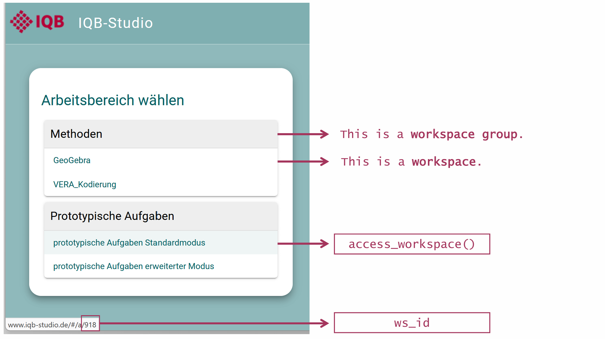
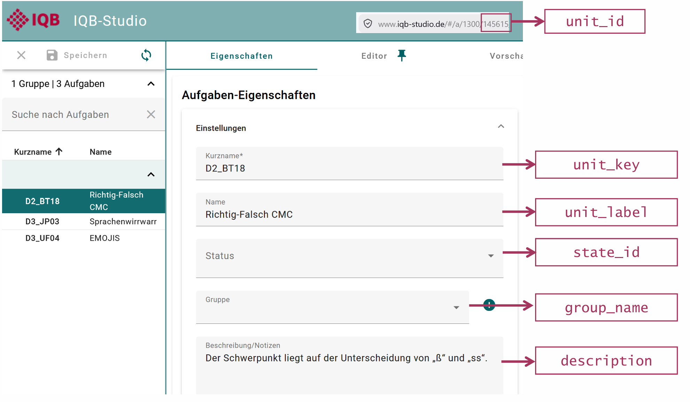
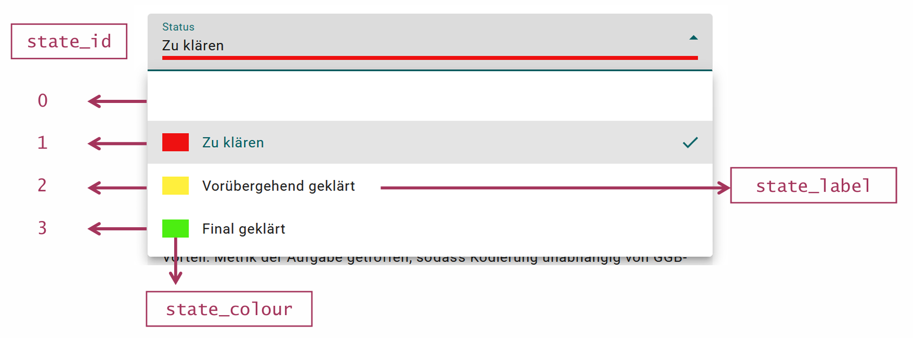
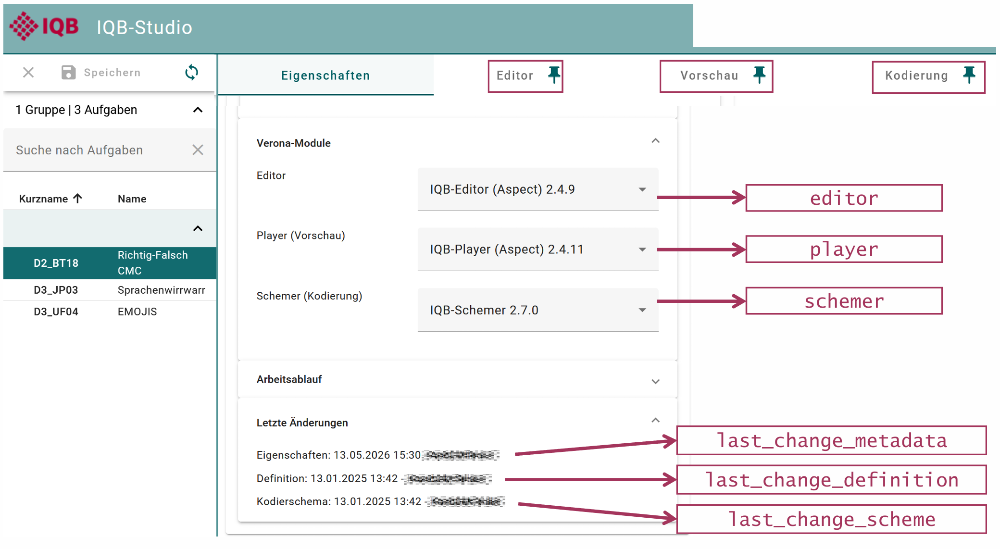
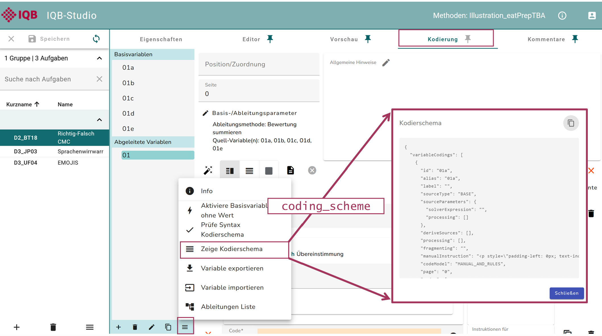

Introduction to the IQB-Studio with eatPrepTBA
eatPrepTBA.RmdeatPrepTBA is an R package designed to support the
preparation and management of technology-based assessments (TBA) used in
IQB research workflows. It provides wrapper functions to interact with
the IQB Studio and the IQB Testcenter APIs. Moreover, it provides some
routines for preparing and combining data from these different resources
to manage TBA studies.
This introduction covers Studio access and unit metadata. For response coding, missing values, and a scaling data set, continue with the standard workflow (in German).
Preparations
eatPrepTBA can be installed from GitHub.
install.packages("pak") # once
pak::pak("iqb-research/eatPrepTBA")
library(eatPrepTBA)IQB-Studio Login
To log in to the IQB Studio, use login_studio().
The example uses Studio version 20.0.1. Use the version
shown by your Studio instance (marked as app_version in the
screenshot below, for example at https://www.iqb-studio.de). Workspace IDs below are
examples; replace them with IDs available to your account. The Studio
version is not detected automatically; set it explicitly rather than
relying on the package’s older default.
app_version <- "20.0.1"
login <- login_studio(keyring = TRUE, app_version = app_version)By default, credentials are entered in a dialog with masked password
input, also outside RStudio when a GUI is available. If no dialog is
available, or with dialog = FALSE, the function uses
console input. The screenshots show an earlier Studio version; the
interface may look different.

With keyring = TRUE, credentials are stored in your
local credential store and reused on later calls. Each call still logs
in to Studio, but you do not need to type the credentials again. Use
change_key = TRUE together with keyring = TRUE
to replace saved credentials.
The function returns a LoginStudio object invisibly. It
contains the workspace information and a request function that uses the
access token for later API calls. Save it as login and pass
it to access_workspace(). Printing login shows
the workspace groups and workspaces available to your account.
Accessing a workspace
All workspaces are part of a workspace group and have a unique ID.
You can access a workspace with access_workspace().
The argument ws_id selects the workspace.
workspace <- access_workspace(login = login, ws_id = 1300)The ID of a workspace can be found by looking at its URL in the
Studio (last digits) or by calling the login object, which
prints a list of the workspace groups and workspaces that you have
access to, including their respective IDs (ws_id).

You should save your output into an object (e.g., “workspace”) to be able to work with it later.
You can also access multiple workspaces at the same time:
workspace <- access_workspace(login = login, ws_id = c(1300, 919))Accessing the units in a workspace
Using the workspace object, retrieve units with get_units(). This
loads the units from the selected workspaces into one table; larger
workspaces may take a moment to load. Metadata is included by default.
Use unit_definition = TRUE if you also need page
information.
units <- get_units(workspace = workspace)The output below uses three anonymized example units with 37 variables from a saved Studio export. It is an illustration, not a live download.
get_units() returns a tibble with one row per unit and
several metadata columns, including nested list-columns.
units## # A tibble: 3 × 27
## ws_label wsg_id wsg_label unit_id unit_key unit_label group_name ws_id
## <chr> <int> <chr> <int> <chr> <chr> <chr> <dbl>
## 1 Illustration_ea… 46 Methoden 145615 D2_BT18 Richtig-F… "" 1300
## 2 Illustration_ea… 46 Methoden 145616 D3_UF04 EMOJIS "" 1300
## 3 Illustration_ea… 46 Methoden 145617 D3_JP03 Sprachenw… "" 1300
## # ℹ 19 more variables: state_id <chr>, state_color <chr>, state_label <chr>,
## # description <chr>, unit_variables <list>, unit_profiles <list>,
## # items_list <list>, items_profiles <list>, coding_scheme <chr>,
## # player <chr>, editor <chr>, schemer <chr>, scheme_type <chr>,
## # last_change_definition <chr>, last_change_definition_user <chr>,
## # last_change_scheme <chr>, last_change_scheme_user <chr>,
## # last_change_metadata <chr>, last_change_metadata_user <chr>The tibble contains the following variables:
names(units)## [1] "ws_label" "wsg_id"
## [3] "wsg_label" "unit_id"
## [5] "unit_key" "unit_label"
## [7] "group_name" "ws_id"
## [9] "state_id" "state_color"
## [11] "state_label" "description"
## [13] "unit_variables" "unit_profiles"
## [15] "items_list" "items_profiles"
## [17] "coding_scheme" "player"
## [19] "editor" "schemer"
## [21] "scheme_type" "last_change_definition"
## [23] "last_change_definition_user" "last_change_scheme"
## [25] "last_change_scheme_user" "last_change_metadata"
## [27] "last_change_metadata_user"Four of these variables are already familiar from the workspace information:
-
ws_id: the ID of the respective workspace -
ws_label: the name of the respective workspace -
wsg_id: the ID of the workspace group of the respective workspace -
wsg_label: the name of the workspace group of the respective workspace
Like workspaces, each unit has its own unique ID and label. Each unit also has a unit key and sometimes a description and information about its state.
-
unit_id: the unique ID of the unit. -
unit_label: the label (name) of the unit. -
unit_key: the short name of the unit. -
group_name: the group assigned to the unit. -
description: the description or notes stored for the unit. -
state_id: the state identifier supplied by Studio. Its meaning depends on the workspace-group settings;state_labelandstate_colorare added when those settings are available.


In the Studio, the tab “Verona Module” shows information about the software component behind a unit’s editor, preview, or coding interface.
-
editor: the editor module assigned to the unit -
player: the preview/runtime module assigned to the unit -
schemer: the coding module assigned to the unit
To check for updates and changes via the Editor, you can have a look
at the variables starting with last_change.
-
last_change_definition: timestamp of the last change to the unit definition. -
last_change_definition_user: user who last changed the unit definition. -
last_change_scheme: timestamp of the last change to the coding scheme. -
last_change_scheme_user: user who last changed the coding scheme. -
last_change_metadata: timestamp of the last change to the metadata. -
last_change_metadata_user: user who last changed the metadata.

The coding scheme of a unit defines how responses in a unit are
interpreted or scored. get_units() returns it in JSON
format. In the Studio, it is not possible to check for mistakes in the
coding scheme across several units. With eatPrepTBA, you can check
several units at once.
-
coding_scheme: the coding scheme of the respective unit in JSON format.

The variables unit_variables,
unit_profiles, items_list, and
items_profiles are list-columns containing nested
information rather than single values.
-
unit_variables: the input variables supplied by the unit. A coding scheme can derive an item score from several input variables, for example by summing several true/false responses. The item-variable links are stored initems_list;add_item_id()attaches these item IDs to variable-level data.
For a closer look at the variables inside the unit, the lists can be unnested:
# undo nested structure
units_unnested <- units |>
dplyr::select(unit_key, unit_variables) |>
tidyr::unnest(unit_variables)
units_unnested## # A tibble: 37 × 11
## unit_key variable_id variable_ref variable_page variable_type variable_format
## <chr> <chr> <chr> <chr> <chr> <chr>
## 1 D2_BT18 01a 01a "" integer ""
## 2 D2_BT18 01b 01b "" integer ""
## 3 D2_BT18 01c 01c "" integer ""
## 4 D2_BT18 01d 01d "" integer ""
## 5 D2_BT18 01e 01e "" integer ""
## 6 D3_UF04 12 12 "" string "text-selectio…
## 7 D3_UF04 01 01 "" integer ""
## 8 D3_UF04 02 02 "" integer ""
## 9 D3_UF04 03 03 "" integer ""
## 10 D3_UF04 04 04 "" integer ""
## # ℹ 27 more rows
## # ℹ 5 more variables: variable_values <list>, variable_multiple <lgl>,
## # variable_nullable <lgl>, variable_values_complete <lgl>,
## # variable_value_position_labels <list>